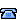

On-Hook--No calls are active, and you do not have an active dial tone. Your Cisco IP Communicator provides on-hook dialing (pre-dial), which enables you to enter or choose phone numbers before activating the call. When your Cisco IP Communicator is on-hook, this icon appears next to each phone number: 
Off-Hook--The speakerphone is active, or any of several other methods are used to get a dial tone
or to answer an incoming call. When your phone is off-hook, one of these icons appears,
depending on the call or line state:
,
, or  . See the "Understanding Call and Line Icons" topic
. See the "Understanding Call and Line Icons" topic